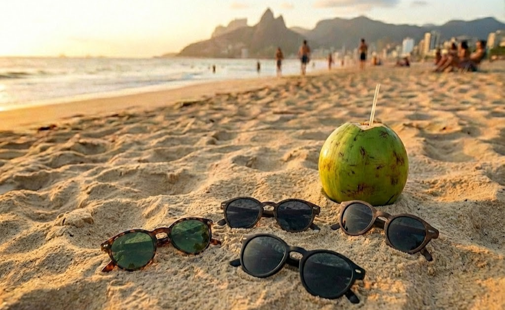

Scroll
A Marca
Nascemos do sol e do mar
A Duckling é mais que óculos de sol — é a essência do Rio de Janeiro. Onde o horizonte encontra o oceano e o estilo encontra a leveza da vida carioca.
Cada peça foi pensada para quem vive entre a cidade e a praia, entre o asfalto e a areia. Design atemporal, conforto que não passa despercebido.

“O Rio não é só cenário — é o nosso modo de ver o mundo.”
Estética

Cidade e vida praiana
Inspirados pela luz do Rio, pelas praias, pelo Cristo e pelo Pão de Açúcar. A Duckling traduz essa estética em óculos que combinam com o seu dia a dia.
Onde a marca respira


Em breve
Fase final de desenvolvimento
Estamos em fase final de desenvolvimento da marca para lançamento. Em breve você poderá vestir a essência do Rio em cada detalhe.